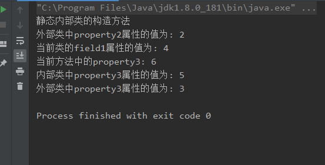
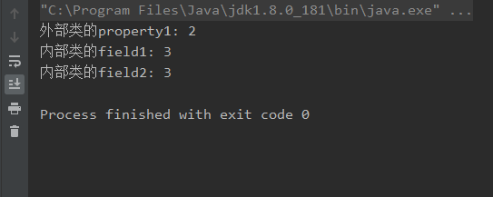
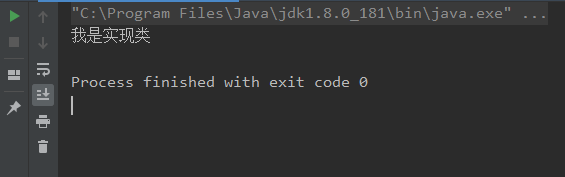

文章内容输出来源：拉勾教育Java大数据训练营
第一次接触内部类是在看Flink代码时，代码中有很多静态内部类的定义，因为自己是半路转的Java没有系统的学习过很多基础都不太了解，所以只是把静态内部类的写法当做了一种类的声明方法，没有太在意，直到用的时候才发现了问题。场景是这样的，我在外部类里面定义了一个静态内部类，外部类中有一个Spring注入的属性，这个属性是非静态的在静态内部类中不能访问，而我需要访问它，这要怎么办呢？
最后的解决方法是把这个静态内部类改成了非静态的，结果编译通过，运行一切正常。那么我为什么一开要定义成静态内部类呢？原因很简单因为我看的代码定义的内部类都是静态的。这时的我就很困惑静态内部类和非静态内部类到底有什么区别，什么时候要用静态的什么时候要用非静态的内部类呢？今天在大数据训练营课程的学习中终于明白了。
什么时候需要内部类
当一个类存在的价值仅仅是为某一个类服务时，可以将这个类定义成被服务类的内部类，这样可以隐藏类的实现细节方便访问外部类的私有成员
其实Java的内部类一共有四种: 普通内部类、静态内部类、方法内部类、匿名内部类, 下面分别来看一下
普通内部类
普通内部类的定义方式和一般的类相同，只是包含在另一个类中，定义形式如下:
public class InnerClassTest {
private int property1 = 1;
/**
* 普通内部类
*/
public class NormalInnerClass{
private int field1 = 1;
public NormalInnerClass(){
System.out.println("普通内部类的构造方法");
}
public void show(){
System.out.println("外部类中property1属性的值为: "+property1);
System.out.println("当前类的field1属性的值为: " + field1);
}
}
}上面就是一个普通内部类的声明方式，除此之外我还为它添加了一些属性和方法，接下来我们来初始化这个内部类并调它的方法看一下。怎么样才可以初始化这个内部类呢？
思考一下一个普通类内部的成员变量和方法要怎么访问呢？当然是通过类的实例.变量/方法名来访问，其实静态内部类也可以看做外部类的一个属性，所以怎么访问大家应该多少应该会猜到一些了吧，但结果可能和你猜想的并不一致。
public class InnerClassTest {
private int property1 = 1;
public static void main(String[] args) {
//声明一个外部类
InnerClassTest ic = new InnerClassTest();
//声明一个普通内部类
NormalInnerClass nic = ic.new NormalInnerClass();
nic.show();
}
/**
* 普通内部类
*/
public class NormalInnerClass{
private int field1 = 1;
public NormalInnerClass(){
System.out.println("普通内部类的构造方法");
}
public void show(){
System.out.println("外部类中property1属性的值为: "+property1);
System.out.println("当前类的field1属性的值为: " + field1);
}
}
}运行结果:

看一下main方法中的代码，你猜对了么？我第一次是完全没有想到是这么声明的
还有一个比较有意思的问题，如果我们的外部类和内部类中有相同名字的属性要怎么访问？例如下面代码中的property2
public class InnerClassTest {
private int property1 = 1;
private int property2 = 2;
public static void main(String[] args) {
//声明一个外部类
InnerClassTest ic = new InnerClassTest();
//声明一个普通内部类
NormalInnerClass nic = ic.new NormalInnerClass();
nic.show();
nic.show(4);
}
/**
* 普通内部类
*/
public class NormalInnerClass {
private int field1 = 1;
private int property2 = 3;
public NormalInnerClass() {
System.out.println("普通内部类的构造方法");
}
public void show() {
System.out.println("外部类中property1属性的值为: " + property1);
System.out.println("当前类的field1属性的值为: " + field1);
}
public void show(int property2) {
System.out.println("当前方法中的property2: " + property2);
System.out.println("内部类中property2属性的值为: " + this.property2);
System.out.println("外部类中property2属性的值为: " + InnerClassTest.this.property2);
}
}
}运行结果:

普通内部类已经讲完了，现在来描述一下它的特点吧：
- 普通内部来可以和普通类一样定义成员变量、成员方法和构造方法
- 普通内部类可以和普通类一样用final和abstract修饰
- 普通内部类需要使用外部对象来创建
- 如果普通内部类和外部类有相同名字的成员变量时需要加this，外部类的this需要通过类名.this获取
静态内部类
静态内部类只需要在普通内部类前面加一个static
public class StaticInnerClassTest {
private int property1 = 1;
private static int property2 = 2;
private static int property3 = 3;
public static void main(String[] args) {
}
/**
* 静态内部类
*/
public static class StaticInnerClass {
private int field1 = 4;
private static int property3 = 5;
public StaticInnerClass() {
System.out.println("静态内部类的构造方法");
}
public void show() {
System.out.println("外部类中property2属性的值为: " + property2);
System.out.println("当前类的field1属性的值为: " + field1);
}
public void show(int property3) {
System.out.println("当前方法中的property3: " + property3);
System.out.println("内部类中property3属性的值为: " + StaticInnerClass.property3);
System.out.println("外部类中property3属性的值为: " + StaticInnerClassTest.property3);
}
}
}同样的我在静态内部类中也定义了一些属性和方法，这些属性和方法要怎么访问呢？刚已经说过普通内部类可以看做外部类的属性，那么静态内部类就可以看做外部类的静态属性，我们知道静态属性或方法时通过类名.属性名/方法名来调用的并且静态方法中不能调用非静态的属性或者方法,所以我们在声明静态内部类时就可以直接通过外部类.静态内部类来声明了
public class StaticInnerClassTest {
private int property1 = 1;
private static int property2 = 2;
private static int property3 = 3;
public static void main(String[] args) {
StaticInnerClass staticInnerClass = new StaticInnerClass();
staticInnerClass.show();
staticInnerClass.show(6);
}
/**
* 静态内部类
*/
public static class StaticInnerClass {
private int field1 = 4;
private static int property3 = 5;
public StaticInnerClass() {
System.out.println("静态内部类的构造方法");
}
public void show() {
System.out.println("外部类中property2属性的值为: " + property2);
System.out.println("当前类的field1属性的值为: " + field1);
}
public void show(int property3) {
System.out.println("当前方法中的property3: " + property3);
System.out.println("内部类中property3属性的值为: " + StaticInnerClass.property3);
System.out.println("外部类中property3属性的值为: " + StaticInnerClassTest.property3);
}
}
}输出结果:

静态内部类的特点:
- 不能访问外部类中的非静态变量
- 可以直接创建对象
- 访问与外部类同名的属性时通过类名.即可访问
局部(方法)内部类
从名字就可以看出这种内部类数定义在方法中的
public class MethodInnerClassTest {
private int property1 = 1;
public static void main(String[] args) {
MethodInnerClassTest mc = new MethodInnerClassTest();
mc.test();
}
public void test() {
final int field2 = 3;
//方法内部类
class MethodInnerClass {
private int field1 = 2;
public void show() {
property1 += 1;
System.out.println("外部类的property1: " + property1);
field1 += 1;
System.out.println("内部类的field1: "+ field1);
//field2+=1; 访问方法中的变量必须由final修饰
System.out.println("内部类的field2: "+ field2);
}
}
MethodInnerClass mic = new MethodInnerClass();
mic.show();
}
}输出结果:

因为局部(方法)内部类是定义和作用域都在方法中,所以在test方法中声明了并定义了一个局部(方法)内部类，使用局部方法内部类访问外部方法中的变量时要求外部方法中的变量必须是由final修饰的，这样规定的原因是局部内部类在访问外部方法的变量时会创建一个变量的副本，为了保证数据的一致性要求变量不能修改。
局部(方法)内部类的特点:
- 类的定义在方法体中，只在当前方法体中可以使用
- 没有访问修饰符
- 可以使用外部方法的局部变量但必须是final的
匿名内部类
匿名内部类相信很多小伙伴在不知不觉中已经用到了，一会你可能会恍然大悟，原来我一直在使用匿名内部类。。。
在学习匿名内部流之前先了解一下回调模式，回调模式是指如果一个方法的参数是接口类型，则调用该方法时需要创建并传递一个实现此接口的对象;而该方法在调用时会调用接口对象实现类的方法。
有些人可能已经恍然大悟！
我们先定义一个接口
public interface AnonymousInterface {
void show();
}然后定义一个方法将这个接口作为形参
public class AnonymousInterfaceTest {
public static void main(String[] args) {
}
public void test(AnonymousInterface anonymousInterface){
anonymousInterface.show();
}
}我们要怎么调用这个方法呢？接口是不能实例化的，所以我们要给这个接口写一个实现类传过来
public class AnonymousInterfaceImpl implements AnonymousInterface {
public void show() {
System.out.println("我是实现类");
}
}public class AnonymousInterfaceTest {
public static void main(String[] args) {
AnonymousInterfaceTest ait = new AnonymousInterfaceTest();
ait.test(new AnonymousInterfaceImpl());
}
public void test(AnonymousInterface anonymousInterface){
anonymousInterface.show();
}
}最终输出结果:

虽然是可以但是我们需要额外定义一个类，在执行Java程序时还要将这个类的信息加载到方法区才能执行，有没有办法可以创建一个临时类在使用完后就销毁？答案是匿名类，匿名类的定义如下
public class AnonymousInterfaceTest {
public static void main(String[] args) {
AnonymousInterfaceTest ait = new AnonymousInterfaceTest();
ait.test(new AnonymousInterface(){ //匿名类的定义
public void show() {
System.out.println("我也是实现类");
}
});
}
public void test(AnonymousInterface anonymousInterface){
anonymousInterface.show();
}
}是不是似曾相识，在创建线程时是不是经常用到。
匿名类的特点:
- 接口作为形参时使用
- new的对象使用完成后就会被销毁
- java8开始可以使用lamda表达式
本博客所有文章除特别声明外，均采用 CC BY-SA 3.0协议 。转载请注明出处！